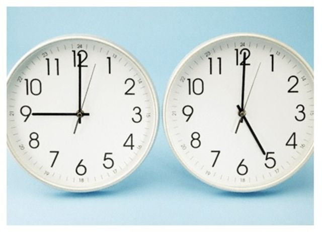

Het probleem bij het onderwijs is dat er gewoon minder mensen zijn die met hun handen willen werken oftewel praktische beroepen uitvoeren zoals bouwvakker, timmerman, metselaar en gemeentewerk. Alhoewel er op dit moment wel meer mensen zich aanmelden voor dit soort opleidingen vanwege het personeelstekort blijft het nog steeds een probleem. Veel mensen kiezen tegenwoordig voor een kantoorbaan of een andere 9 tot 5.